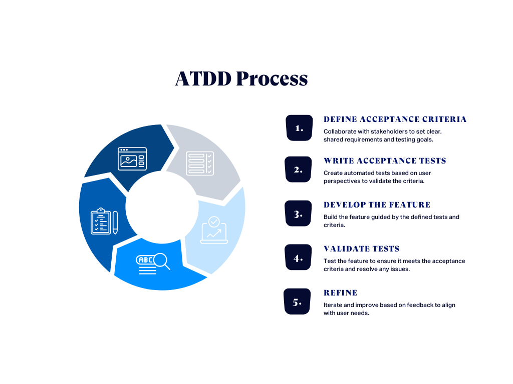

Analoogselt Test-driven development-ile hõlmab Acceptance test-driven development (ATDD)
erinevate vaatenurkadega (klient, arendus, testimine) meeskonnaliikmeid, kes teevad koostööd, et
kirjutada aktsepteerimisteste enne vastava funktsionaalsuse juurutamist.
Need aktsepteerimistestid esindavad kasutaja vaatenurka ja toimivad nõuete vormina,
et kirjeldada, kuidas süsteem toimib, ning samuti on nende abil võimalik kontrollida,
kas süsteem toimib ettenähtud viisil. Mõnel juhul automatiseerib meeskond vastuvõtutestid.

| Head | Halvad |
|---|---|
| Täiustatud suhtlus ja koostöö: ATDD edendab koostöökeskkonda, kus arendajad, testijad ja sidusrühmad teevad algusest peale tihedat koostööd. See aitab tagada ühise arusaamise tootenõuetest. |
Aeg ja hooldus: Üks oluline väljakutse on aja- ja hooldusvajadus. Projekti alguses kõikehõlmavate vastuvõtutestide koostamine võib olla aeganõudev, lükates edasi tegeliku arenduse algust. Koodibaasi kasvades ja arenedes tuleb neid teste muudatuste kajastamiseks värskendada. Kui projekt on mahukas ja seda uuendatakse sageli, võib sellest saada märkimisväärne hoolduskoormus. |
| Selged tootenõuded: Vastuvõtukriteeriumide varane määratlemine annab selguse, mida tuleb ehitada ja testida. See hoiab ära arusaamatused ja tagab vastavuse ärinõuetele. |
Tehniliste oskuste nõuded: Tõhusate vastuvõtutestide kirjutamine eeldab teadmisi kvaliteeditestijuhtumite, rakendusvaldkonna ja testimisvahendite arendamise kohta. Ilma piisavate tehniliste oskusteta meeskonnaliikmetel võib olla raskusi tõhusa panuse andmisega, mis toob kaasa ebaühtlase testikvaliteedi ja lünkade testide katvuses. |
| Varajane tagasiside: Meeskonnad saavad anda ja saada kiiresti tagasisidet, valideerides väikesed tööühikud vastuvõtutestide suhtes arendustsükli varases staadiumis. |
Komplekssed aktsepteerimiskriteeriumid: Selgete ja täpsete aktsepteerimiskriteeriumide määratlemine võib olla keeruline, eriti keeruliste funktsioonide puhul. Arusaamatused võivad põhjustada valesid rakendusi. Liiga üksikasjalikud kriteeriumid võivad piirata loovust ja rakendamise paindlikkust, samas kui liiga ebamäärased kriteeriumid võivad põhjustada valesti tõlgendamist. |
| Suurenenud kvaliteet: Eelmääratletud aktsepteerimiskriteeriumide täitmine aitab saavutada puhta ja hooldatava koodiga kvaliteetsema toote. |
Ebapiisav koostöö: ATDD toetub kõigi sidusrühmade aktiivsele osalemisele. Kui ettevõtte sidusrühmad ei ole täielikult kaasatud, ei pruugi aktsepteerimiskriteeriumid kasutajate vajadusi täpselt kajastada. Nende lünkade ületamiseks on oluline hõlbustada selget ja tõhusat suhtlust äri- ja tehniliste meeskondade vahel. |
| Suurenenud kliendirahulolu: Kuna aktsepteerimiskriteeriumid määrab ettevõte, tagab rakendatud koodi nende kriteeriumide alusel valideerimine toote vastavuse klientide vajadustele, mis toob kaasa suurema rahulolu. |
Tööriistade ja integreerimise probleemid: Meeskonnaliikmetel võib olla keeruline valida õigeid tööriistu, mis sobivad nende töövoo ja projekti vajadustega. ATDD protsessi võivad takistada ühildumatud või ebapiisavad tööriistad. ATDD tööriistad nõuavad hoolikat planeerimist ja teostamist, et integreerida need olemasolevate arenduskeskkondade, CI/CD torujuhtmete ja muude tööriistadega. |
| Vähendatud ümbertöötlemine ja madalamad kulud: Probleemide varajane avastamine ja lahendamine vähendab ümbertöötamise vajadust, säästes aega ja kulusid, mis on seotud probleemide lahendamise hilisemas arendusprotsessis. |
Testi automatiseerimise üldkulud: Automaattestide arendamiseks ja hooldamiseks on vaja märkimisväärseid ressursse, mis võib arendusprotsessi aeglustada, eriti kui testid pole hästi optimeeritud. Automaattestid võivad mõnikord olla ebaühtlased, andes ebajärjekindlaid tulemusi. See võib õõnestada usaldust testide vastu ja nõuda täiendavaid jõupingutusi nende stabiliseerimiseks. |
| Pidev integreerimine ja tarne (CI/CD): Automatiseeritud vastuvõtutestid hõlbustavad muudatuste kiiret integreerimist ja tarkvara pidevat tarnimist. See tagab uute funktsioonide kiire ja enesekindla juurutamise. |
|
| Edendab testimise automatiseerimist: ATDD soodustab testimisprotsesside automatiseerimist ja aitab säilitada kõrget arendustempot, tagades samal ajal tarkvara stabiilsuse ja töökindluse. |